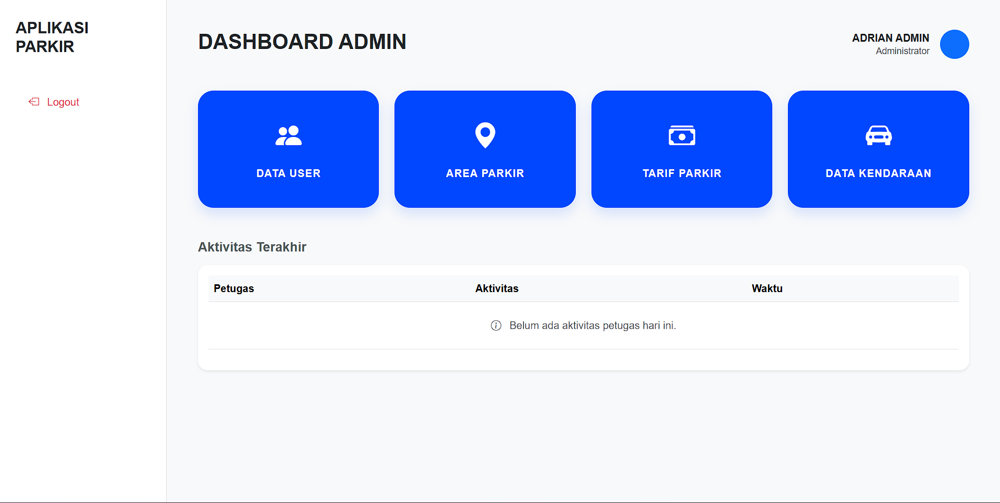
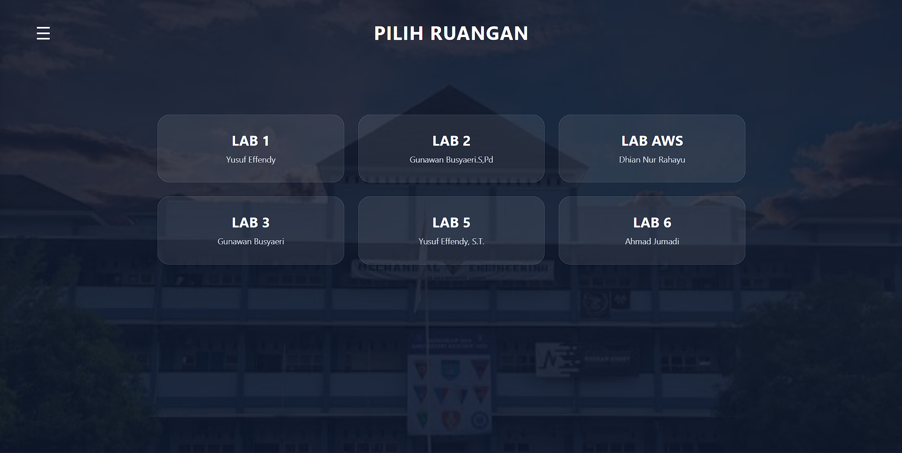
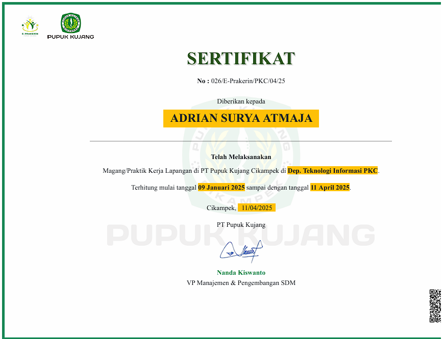
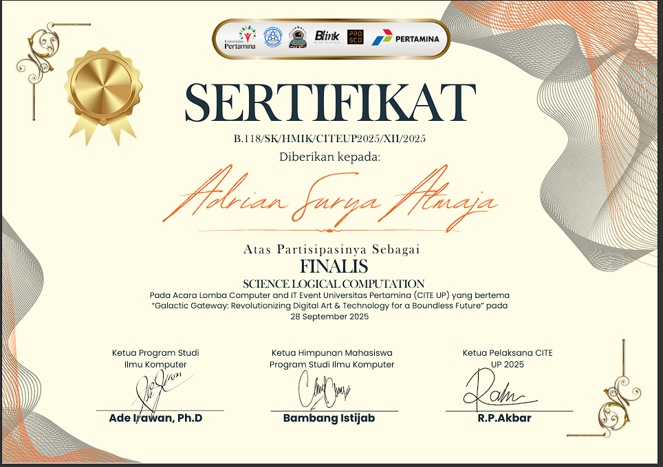

Lulusan RPL SMK Negeri 1 Karawang. Antusias di bidang Web Development dan IT Support. Siap belajar, berkontribusi, dan berkembang.
Halo! Saya Adrian Surya Atmaja, lulusan jurusan Rekayasa Perangkat Lunak dari SMK Negeri 1 Karawang tahun 2026.
Selama masa studi saya aktif membangun proyek web berbasis PHP dan JavaScript. Saya juga menyelesaikan PKL di PT Pupuk Kujang Cikampek sebagai IT Service Business Partner, di mana saya mendapat pengalaman langsung dalam troubleshooting, instalasi perangkat, dan dukungan teknis.
Saya adalah pribadi yang teliti, adaptif, dan semangat belajar hal baru. Siap untuk bergabung dalam tim dan memberikan kontribusi nyata.
Menganalisis masalah secara sistematis dan menemukan solusi yang tepat.
Aktif berkolaborasi dan mendukung rekan untuk mencapai tujuan bersama.
Menyampaikan ide dan informasi dengan jelas kepada tim maupun atasan.
Disiplin mengatur prioritas dan memastikan pekerjaan selesai tepat waktu.
Mudah menyerap hal baru, baik teknologi maupun alur kerja di lingkungan baru.
Fleksibel menghadapi perubahan dan tantangan baru di dunia kerja.
Bekerja dengan penuh perhatian terhadap detail untuk hasil yang akurat.
Berkomitmen penuh terhadap setiap tugas dan bertanggung jawab atas hasilnya.
Proyek yang dibangun selama masa studi.

Aplikasi parkir berbasis web untuk pengelolaan data kendaraan, pengguna, dan transaksi parkir secara terintegrasi.

Sistem tampilan jadwal yang berubah otomatis berdasarkan waktu. Mencakup jadwal guru, mapel, penanggung jawab lab, dan video saat jam istirahat.

PT Pupuk Kujang Cikampek
Penyelesaian program PKL di divisi IT Service Business Partner.
2025
CiteUp 2025
Sertifikat finalis lomba Science Logical Computing pada event CiteUp 2025.
2025